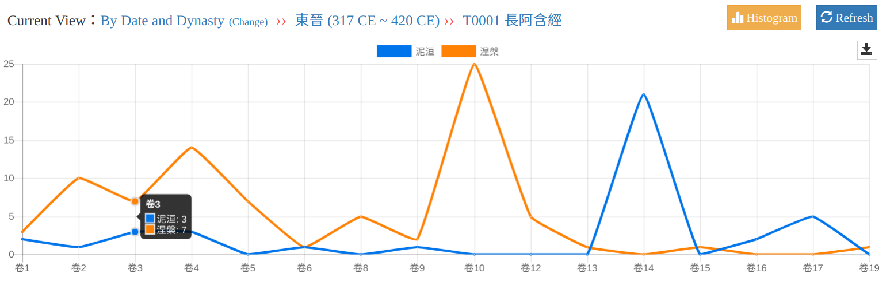

2.1.
Start a New Analysis
Concordance Search and Analysis will first require user to enter the keywords they want to compare and specify the search scope.
Fig 2. the start page of Concordance Search and Analysis system
2.2.
Data
The system retrieves the complete search results and stores the search results for different keywords in the system cache at the same time. On data page, users can examine the complete list of the matches, and delete unwanted records from the result set.
Fig 3. the data page of Concordance Search and Analysis system
2.3.
Analysis
The System allows user to aggregate search results from different dimensions: by Text Category, by Date and Dynasty, by Authors and Translators, and compare the result of multiple search terms. Fig 4, 5 and 6, show the analysis results of two Synonyms: 泥洹(ní huán)and 涅槃(niè pán) form above-mentioned three different dimensions
Fig 4 The statistics keywords in different text categories
Fig. 5: The statistics of keywords with different translators
Fig. 6 The statistics of keywords in different dynasties
The system offers several statistical range settings. Thus, users are able to observe a wider usage of keyword from large-scale view, and at the same time, to trace a particular phenomenon back to the source text for identification and further research.
Fig. 7. statistics of keywords in different texts from Eastern-Jin Dynasty (C.E. 317 -420)

Fig. 8 statistics of keywords in different fascicles of 長阿含經(Dīrghāgama).
If we click the points represented the fascicle 3 of長阿含經(Dīrghāgama) in the Fig.8, we will see sentences that actually contain keywords in the text.
Fig 9. sentences that actually contain keywords in fascicle 3 of Dīrghāgama.
In addition, the system also provides the "prefix and suffix analysis" feature, allowing users to quickly access the statistics of a character before and after the keyword.
Fig 10. prefix and suffix analysis of keywords
In addition, in the spatial analysis function, we use a GIS system to display the location of the text containing the keywords, which allows users to compare the use of keywords geographically.
Fig 11. the spatial analysis of keywords